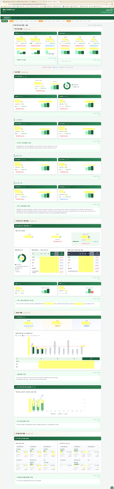

| 층 | 예 | 폴더 복사로 이전 |
|---|---|---|
| 1 런타임 | Python · 패키지 · Claude Code | ✕ |
| 2 도구 설정 | Claude Code 설정 · 스킬 · 커맨드 · 플러그인 | ✕ |
| 3 인증 | Claude 계정 · API 키 · 접속정보 | △ 복사/재발급 결정 |
| 4 외부 권한 | 태블로 · 오라클 계정 권한 | ✕ |
| 5 운영 노하우 | "이 파일은 건드리지 마라" 같은 머릿속 규칙 | △ 적힌 것만 |
| 단계 | 방식 | 가능 시점 |
|---|---|---|
| A | 디비버 수동 조회 · CSV 내보내기 | 지금 가능 |
| A+ | 디비버 작업(Task) 저장 · 예약 실행 | 지금 가능 |
| B | 파이썬 스크립트가 DB에서 직접 내려받기
조건 ① DB 12.1 이상 ② 패키지 설치 가능 ③ 전산팀: 스크립트 접속 무방 확인 |
조건 3개 확인 후 |
| 산출물 | 반복 주기 | 담당 ✎ |
|---|---|---|
| 인수인계 스킬 | 분기 갱신 | |
| 보고 데이터 운영 규칙 | 매월 마감 시 | |
| 모금예측 스킬 | 매월 / 분기 | |
| 영수증 검수 절차 | 매월 | |
| 권한 요청 목록 → 전산팀 공유 | 1회 |